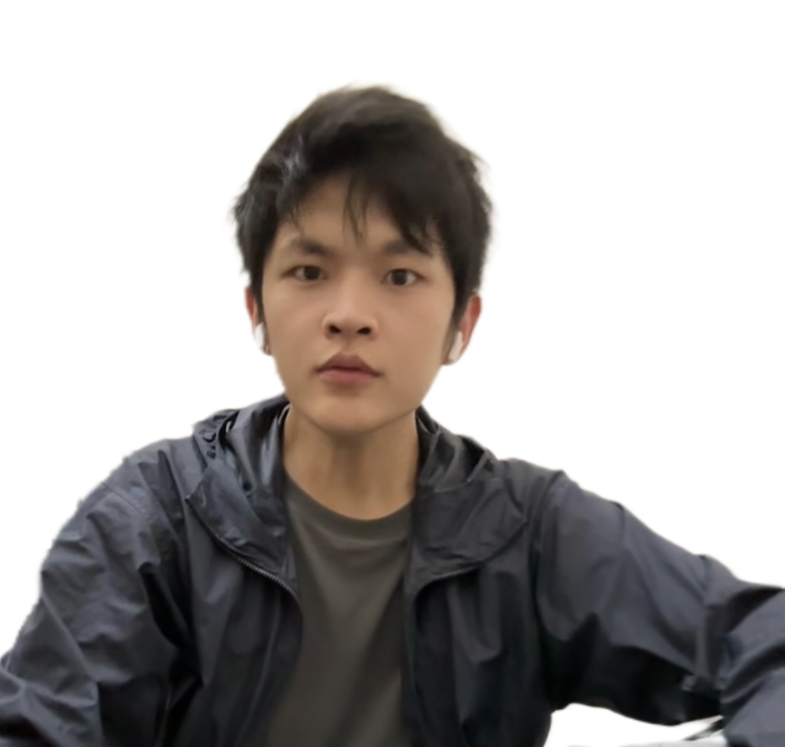

|
 [Google Scholar] [GitHub][Email] |
ZHANG Qinggang (张庆刚)I am now a third-year PhD Candidate in DEEP Lab at The Hong Kong Polytechnic University, Department of Computing, supervised by Dr. Xiao HUANG. My research interests include Knowledge Graphs, Large Language Models, Graph Neural Networks, Recommender Systems, Question Answering, etc. |
[2024.09] Our papers KnowGPT, LLM4EA and COKE were accepted by NeurIPS’24.
[2024.06] Our survey of LLM-based Text-to-SQL is released online.
[2024.05] I was invited as a PC member of NeurIPS’24.
[2024.03] I was invited as a PC member of KDD’24.
[2024.02] Our paper SGU-SQL was released which enhance LLMs for Text-to-SQL generation.
[2023.06] I passed the confirmation as a Ph.D. Candidate. Thanks to the distinguished panel members: Prof. Jiannong Cao, Prof. Qing Li, and Dr. Bo Li.
[2023.05] I was invited to serve as the reviewer of TKDE.
2024
Structure Guided Large Language Model for SQL Generation.
Qinggang Zhang, Junnan Dong, Hao Chen, Wentao Li, Feiran Huang, Xiao Huang*.
arXiv Preprint.
Next-Generation Database Interfaces: A Survey of LLM-based Text-to-SQL.
Zijin Hong, Zheng Yuan, Qinggang Zhang, Hao Chen, Junnan Dong, Feiran Huang, Xiao Huang*.
arXiv Preprint.
KnowGPT: Knowledge Graph based Prompting for Large Language Models.
Qinggang Zhang†, Junnan Dong†, Hao Chen, Daochen Zha, Zailiang Yu, Xiao Huang*.
The Thirty-eighth Annual Conference on Neural Information Processing Systems (NeurIPS’24).
Entity Alignment with Noisy Annotations from Large Language Models.
Shengyuan Chen, Qinggang Zhang, Junnan Dong, Wen Hua, Xiao Huang*.
The Thirty-eighth Annual Conference on Neural Information Processing Systems (NeurIPS’24).
Cost-efficient Knowledge-based Question Answering with Large Language Models.
Junnan Dong, Qinggang Zhang, Chuang Zhou, Daochen Zha, Xiao Huang*.
The Thirty-eighth Annual Conference on Neural Information Processing Systems (NeurIPS’24).
Logical Reasoning with Relation Network for Inductive Knowledge Graph Completion.
Qinggang Zhang, Keyu Duan, Junnan Dong, Pai Zheng, Xiao Huang*.
ACM SIGKDD Conference on Knowledge Discovery and Data Mining (KDD'24).
Modality-Aware Integration with Large Language Models for Knowledge-based Visual Question Answering.
Junnan Dong†, Qinggang Zhang†, Huachi Zhou, Daochen Zha, Pai Zheng, Xiao Huang*.
The 62nd Annual Meeting of the Association for Computational Linguistics (ACL'24).
Knowledge-to-SQL: Enhancing SQL Generation with Data Expert LLM.
Zijin Hong, Zheng Yuan, Hao Chen, Qinggang Zhang, Feiran Huang, Xiao Huang*.
The 62nd Annual Meeting of the Association for Computational Linguistics (ACL'24 Findings).
2023
Integrating Entity Attributes for Error-Aware Knowledge Graph Embedding.
Qinggang Zhang, Junnan Dong, Qiaoyu Tan, Xiao Huang*.
IEEE Transactions on Knowledge and Data Engineering (TKDE'23).
Hierarchy-Aware Multi-Hop Question Answering over Knowledge Graphs.
Junnan Dong†, Qinggang Zhang†, Xiao Huang*, Keyu Duan, Qiaoyu Tan, Zhimeng Jiang.
The International World Wide Web Conference (WWW'23).
Error Detection on Knowledge Graphs with Triple Embedding.
Yezi Liu, Qinggang Zhang, Mengnan Du, Xiao Huang, Xia Hu*.
The 31st European Signal Processing Conference (EUSIPCO'23).
Active Ensemble Learning for Knowledge Graph Error Detection.
Junnan Dong, Qinggang Zhang, Xiao Huang*, Qiaoyu Tan, Daochen Zha, Zihao Zhao.
ACM International Conference on Web Search and Data Mining (WSDM'23).
2022
Contrastive Knowledge Graph Error Detection.
Qinggang Zhang, Junnan Dong, Keyu Duan, Xiao Huang*, Yezi Liu, Linchuan Xu.
ACM International Conference on Information and Knowledge Management (CIKM'22).
Constructing Low-Redundant and High-Accuracy Knowledge Graphs for Education.
Wentao Li, Huachi Zhou, Junnan Dong, Qinggang Zhang, Qing Li, George Baciu, Jiannong Cao and Xiao Huang.
International Conference on Web-Based Learning (ICWL'22).
KDD Student Travel Grant in 2024
Best Presentation Award of COMP 50th Anniversary Research Student Conference in 2024
Hong Kong Polytechnic University Top Conference Grant in 2024
SIGIR Student Travel Grant in 2022
Vector Scholarship in Artificial Intelligence in 2021
Outstanding graduate award (undergraduate in NPU)
National scholarships in 2015, 2017 and 2018
First-class scholarships in every year of undergraduate
The CCF Outstanding Undergraduate Award
Champion in 2017 China Robot Competition
Champion in the 2017 international Underwater Robot competition
Honorable Mention in the 2017 Interdisciplinary Contest in Modeling
Champion in “WRC2016” international Underwater Robot competition
Champion at 21th FIRA RoboWorld Cup 2016, Beijing,China
Champion in 2016 China Robot Competition
PC Member: NeurIPS'24, KDD'24, KDD'25, ICLR'25
Invited Reviewer: TKDD, TKDE
Volunteer: ICDM'23, WSDM'23, KDD'24